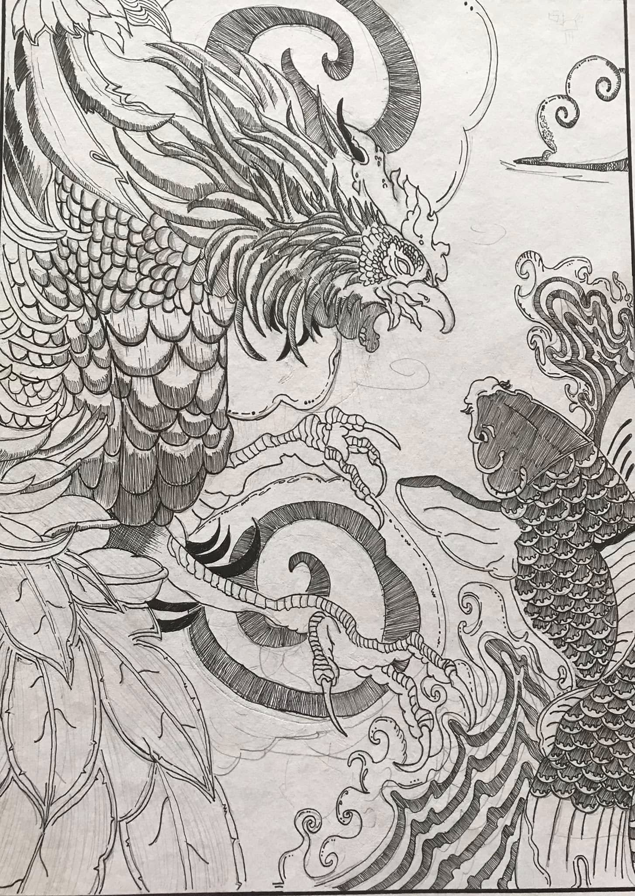
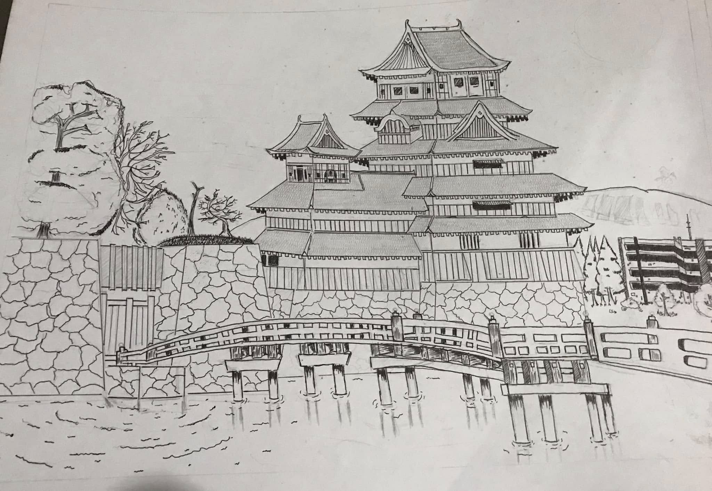

Shiloh Christian School
Bacolod City · 2014–2018
I'm a third-year BS Computer Science student at National University - Bacolod, learning to build for the web and finding inspiration in art and stories.
A little more about me
I like balancing focused problem-solving with creative exploration. Drawing helps me slow down and notice details, while stories introduce me to new ideas and perspectives.
I value curiosity, patience, and making room to learn at my own pace. Those principles shape how I approach both my studies and the things I enjoy outside them.
Based in Bacolod City
Where I've learned and grown
Bacolod City · 2014–2018
Bacolod City · 2018–2024
Computer Science · 3rd Year
What I'm learning and practicing
Front-end tools I've used to build and style this portfolio.
Strengths I practice through school, creative hobbies, and staying active.
Outside the classroom
This section focuses on ongoing pursuits rather than formal awards or competition results.
I keep exploring drawing as a way to practice creativity and make art I can share.
Playing basketball is one of the ways I stay active and enjoy time away from a screen.
I work out from time to time as part of looking after my wellbeing.
Work I've made and shared
I'm building experience through personal projects and creative practice.
A responsive website introducing me, my education, skills, interests, and ways to connect.
My contribution: Designed and built the page, organized its content, and created responsive layouts for its sections.


A small collection of my drawings, shared as a glimpse into my creative practice.
My contribution: Created the drawings and selected pieces to feature here.
Beyond the classroom
I enjoy drawing and experimenting with ideas on paper. It's a different kind of problem-solving from coding.
Basketball, a good meal, music, gaming, and getting lost in manga or manhwa help me reset outside my studies.
I want to keep growing as a Computer Science student and use what I learn to create thoughtful, useful software.
Your turn
I'd love to hear from you. Send a note, share an idea, or just say hello.
Find me online